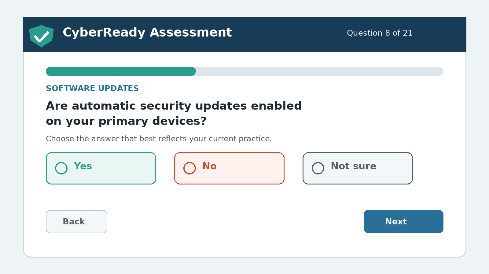

Client requirements
Minimum 4 GB RAM, stable internet access, a display of at least 720p, and a current Chrome, Edge, Firefox, or Safari browser.
Application prototype
A guided browser-based assessment converts current security practices into an overall score, category results, and prioritized actions.
Assessment workflow

Working prototype
Complete 14 questions covering seven baseline security categories. The prototype processes responses in this browser and does not transmit or store them on a server.
 CyberReady Assessment
CyberReady AssessmentSet aside about 5 to 10 minutes. Answer based on current behavior, not the result you hope to achieve. Choose “Not sure” when a setting or practice needs verification.
This educational prototype does not certify compliance, guarantee security, scan devices, or replace a qualified cybersecurity assessment.
Technical overview
CyberReady uses standard web technologies and runs without an account, database, or specialized hardware.
Minimum 4 GB RAM, stable internet access, a display of at least 720p, and a current Chrome, Edge, Firefox, or Safari browser.
The prototype processes assessment responses locally in the browser. It does not request names, passwords, account details, or other secret values.
Semantic headings, keyboard-operable controls, visible focus, readable contrast, responsive layouts, and browser zoom support the intended experience.
The application provides educational guidance. It does not perform scanning, penetration testing, compliance certification, or incident response.